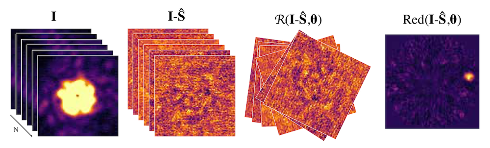

Introduction to High-Contrast Imaging
This will serve as a brief primer to high-contrast imaging (HCI) to illustrate the concepts and themes prevalant within this codebase. This is not meant to be an exhaustive lecture note on the topic, but more of a gentle introduction.
If you are comfortable with HCI topics, consider skipping to the Getting Started section to get introduced to ADI.jl or browse the Examples.
What is HCI
HCI is an advanced imaging technique comprising modern instrumentation, clever observational techniques, and post-processing algorithms. The goal of HCI is to probe the circumstellar regions of a star in the search for companions, debris disks, and more. The use of large aperture telescopes, adaptive optics (AO), and coronagraphs are the basis of HCI. An example of an image taken with these instruments is shown below.

You'll notice a few things: there's no companions to be found, there's a lot of structured noise in the center, and the angular separations (shown by the legend) that the noise encompass are precisely where we are searching for planets. This noise is the effect of quasi-static speckles in the focal-plane. These speckles occur from non-common path aberrations in the AO system and are a fundamental part of the data received by these instruments. Improving the quality of instrumentation is an active topic of HCI research, but it is beyond the scope of this introduction.
Angular Differential Imaging (ADI)
Because this noise is fundamental to the data, post-processing must be performed in order to see any circumstellar signal. This post-processing requires us to fit the PSF of the speckles and then remove it. An example of the above frame with the speckles removed is shown below.

Unfortunately, there's still no signal present, but we've removed the speckles, so what gives? Well the planet is still sitting below the statistical noise in this frame, so we need to find a way to attenuate this noise, which we can do easily by taking a bunch of frames and combining them together. This runs us into a bit of a conundrum: how do we fit the speckles and remove them without removing the companion signal?
This is where angular differential imaging (ADI) comes in. ADI is an observational technique pioneered in the early 2000s as an extension of roll deconvolution for ground-based telescopes. The core of this process is that the quasi-static speckles are a function of the optical system, not the astrophysical source. Throughout a night of observing we can leverage the rotation of the Earth to make the aperture appear to rotate throughout the night (on an alt-az mounted telescope with the field rotator disabled). This apparant rotation will only affect the astrophysical signal while the speckles remain non-rotating. An exaggerated animation showing this rotation is shown below.

By taking this sequence of images (commonly referred to as a cube) we can more easily model and fit the speckle signal separate from any companions. If you median combine the cube as-is, the non-stationary companion signal will attenuate leaving just the speckles. If we derotate the sequence according to the parallactic angles for each frame we align the sky to a common heading. Now we can collapse the derotated sequence and the planet will constructively interfere while the now-rotating speckles will attenuate. The figure below shows these two competing reductions.

Post-Processing Algorithms
Using data cubes (as described in the ADI section), we are tasked with fitting the speckles without capturing the rotating companion signal. Quite a few algorithms have been proposed and a thorough discussion of them is beyond the scope of this introduction. For now, let's assume the algorithms are a black box that produce speckle approximation cubes.
If we have this cube, all we need to do the post-processing reduction is
- Retrieve a speckle estimate cube
- Subtract the speckle estimate from the target cube and form a residual cube
- Derotate the residual cube according to the parallactic angles of the target
- Collapse the derotated residual cube
Steps 2-4 are shown in the following figure

Hey, look- we found a planet! Well, we clearly weren't the first- that is in fact HR8799e. Hopefully this shows the difficulty of HCI and builds up part of the process that occurs outside of the reduction you'll be doing with ADI.jl